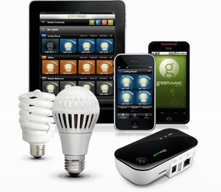

Dethingifying the Internet of Things
"You can follow either the matter, the energy or information, but the most important of these is the information"
Francis Crick, co-discoverer of DNA describing his approach to biology.
A dynamic or plain text essay intended to clarify the meaning of the Internet or things, the virtual and the real.
1. Between physical and digital: where the Internet Of Things lives
1. Between physical and digital: where the Internet Of Things lives
The language for describing any emerging technology tends to be muddled and the concepts to which it refers unclear. As terms, Ambient Intelligence, Ubiquitous Computing and the Internet of Things all point up this difficulty - each of them grasping to encapsulate aspect of human-computer interaction. For me, the thing that connects all these ideas (which I’ll refer to as the Internet of Things from here), is that information is converted into something in the physical world, or some part of the physical world is transmuted into information.
In the past we’ve talked about the “real” and the “virtual”, but these terms no longer seem adequate to describe the direction this technology is heading - if they ever made sense at all. The most productive contrast is the one I just highlighted: between the “physical” and the “informational”.
It’s a clearer way of thinking about changes that terms like Internet of Things have been struggling to denote.
In my working life I work on some of the more prosaic aspects of this emerging technology, but sometimes I have a moment to entertain loftier thoughts. For example:
- Why can’t programming be as fun, and intuitive as carpentry?
- When transmitting information is so cheap, isn’t there some way it could reduce the unsustainable amount physical material we consume?
- If thinking in the abstract is so difficult, why do we spend so long working with conceptual representations?
2. Examples of digital data breaking out into the physical world
2. Examples of digital data breaking out into the physical world
...or perhaps they are examples of ubiquitous computing, or ambient intelligence. Whatever the referring phrase, this essay is concerned with the common thread running between them.
Architecture designed to show digital information through ambient lighting - here street lighting indicating when a ferry will arrive.

Lightbulbs that have a presence on a wifi network will shortly be available. They will be controlled by smart phone app. 
RFID tags on everything, allowing everyday objects to be uniquely identified at a distance by a computer.

3D printing - that is, devices for printing out solid objects.

In Beijing, Microsoft tracked Taxis round the city to determine how best to reduce traffic. Algorithms process the data and then feed back into the design of the city.

3. The real and the virtual: a confusing historical distinction
3. The real and the virtual: a confusing historical distinction
Understandably, many Internet services have been developed by taking some “real world” behaviour and making an analogous, online, or “virtual” version. Email for mail, eCommerce for shops, and so on.
The fact that these new inventions are based on some preceding idea leads to the sense that they are secondary, or imitations. This must be part of the reason that word “virtual” seemed appropriate. While conceiving email as a derivative of postal mail would have felt natural 20 years ago, if anything email now has a bigger presence in people’s lives than postal mail. In this case, it hardly seems fair to call email virtual because of it’s origins. The same can be said for the idea, implied or otherwise, that Wikipedia is a “virtual” encyclopedia.
There is another reason to dub email “virtual”: the postal letter has a tangible form while the physical form of email is not so easily discerned . But surely, the main point of any kind of mail is the transmission of written messages. Perhaps once that required sheets of paper, where now it might be achieved with the use of (still physical) things such as ADSL connection and mail servers. The idea that “virtual” in the sense that it doesn’t really exist is misguided. My sense is that most people would agree with this view, if they had reason to think about it.
4. Virtual Amazon Vs. bricks-and-mortar “real” shops
4. Another broken idea: Amazon is a “virtual” shop to be contrasted with a bricks-and-mortar “real” shop
eCommerce might once have been an offshoot of the traditional retail business, but with 12% of UK retail conducted online, it’s certainly a substantial proposition now. So eCommerce is not virtual in the sense that it’s some diminutive, insubstantial sibling of its “real” counterpart.
And it is physical, in the sense that you still get your physical goods. The images of the products as viewed on your computer screen are transitory, but does anyone question the reality of catalogue shops? Their realness or otherwise simply isn’t a salient feature.
As if to emphasise the confusion, while online shopping is rising inexorably, the practise of looking something up online and then purchasing in a real shop is increasing even faster#. It seems hopeless to ask if Googling for information on a product and then buying from a bricks-and-mortar shop is “real” or “virtual”.
5. Physical and Informational: a better analysis
5. Physical and Informational: a better analysis
Describing cases where “virtual” and “real” seem confused might persuade you that the language isn’t as clear as it ought to be, but then, isn’t language always a bit imprecise? I’d like to go beyond pedantry and suggest a way of thinking about this area which reduces the scope for confusion, and in so doing makes creative thought easier.
Most computer technology has been informational. It hardly makes a difference if I access the web through a TV, on a smart phone or through an Amazon Kindle - many website you can even successfully print out. They are primarily about presenting a text and images to my eye. In another example, two sentences written in different hand writing can mean the same thing, while two very similar looking sentences can mean vastly different things. What I’m trying to get at is they do not depend on their physical form, only with complying with a set of rules I have in my brain that allow me to read. You can write lettering with lasers or blood and it is legible. The defining feature of being informational is that physical properties do not matter, what matters is that the mind can reconstruct the meaning.
By contrast physical things depend upon their exact physical properties to function as they do, regardless of how they a perceived by a human.
Take a frying pan. Reeves’ and Mortimer’s slapstick frying pans are useless for cooking because this physical item critically depend on the melting point of the material it is made from. The opposite is also true: a real frying pan is useless for slapstick because the comedy version needs to be flexible. Appearance is irrelevant, the material is key. This is the mark of the physical.
Of course, this is really just a detailed statement of the obvious: informational things depending on meaning (ie. obey the rules set down by the device that interprets them), while physical things depend on their material properties.
6. Informational purity
6. Informational purity
All things carry information. The structure of a rock gives clues about it’s formation, the rings of a tree encode its age.
And information always has a physical aspect. For example, while I can read something which has been written is or printed in a book, it is essential and vital for any written medium that a there is discernible contrast between the lettering and the background.
Very pure information is that which can be copied, stored and manipulated easily. In this sense, the ones and zeros that computers work with are very pure information. Pure information does not obey the rules of the physical universe, it can be created, copied an manipulated very easily. That’s what makes it useful.
Very physical things are extremely hard to extract information from. Although a rock does in theory contain some information, it’s very hard to read and even specialists can only determine very broad facts.
My contention is that the border between these two worlds is where the Internet of Things live.
7. IoT: converting information into stuff
7. IoT: converting information into stuff
The Ferry
The lights at the ferry terminal have an important physical aspect - they illuniate the terminal. However, they also deliver information about the times of the ferries. We can see this because we could achieve an approximately similar effect with digital clocks, counting down to the next arrival, and flood lights. Though clearly this is a much less beautiful possibility.
3D Printing
This is the canonical example of transfer between the informational and the physical. You send in binary data, almost pure information, and in theory at least, you can get something entirely physical out. That is to say, an item whose function depends not at all on human perception of it, but only it’s material properties.
Making such a complete transition is hard. For this reason, it has often been the case that 3D printing is best suited to producting a physical / informational hybrids: prototypes and sculptures. These are things which have important physical properties (they are sufficiently rigid to be three dimensional) but they are to convey an idea, rather than to be used.
RFID tags
These take a physical fact (the location of an item) and turn it into information.
Taxis
This is a particularly interesting example.
9. Editorial Products
9. Editorial products
The street lights in the previous example are, in a sense, “half way” between the physical and the informational. They have important physical properties, but in other ways they are like very simple, single colour computer screens.
On the other hand 3D printing is very nearly purely physical. At the moment, the most popular use of 3D printing is to make models and prototypes, this is because it eases the physical requirement made on the objects printed. They must stand up, and be the right shape, but they do not have to function.
Fully fledged 3D printing for manufacture remains very immature, precisely because translating between pure information (the data that is fed into the machine) and the purely physical is extremely difficult.